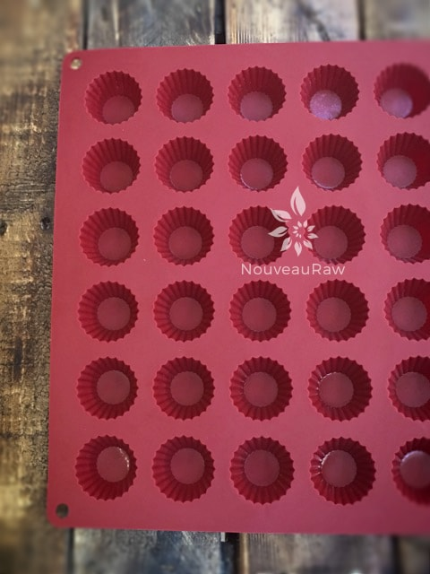
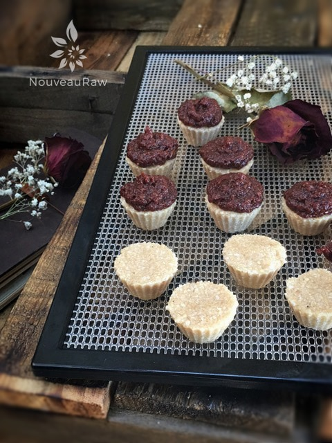
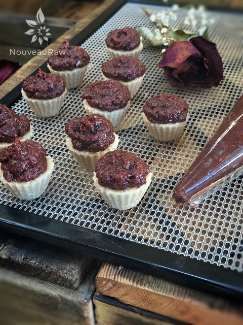

Cherry Coconut Thumbprint Cookies
Cherry Coconut Thumbprint Cookies
~ raw, gluten-free ~
Today, I got the newsletter from Vivapura a raw food ingredient supplier located in Patagonia, AZ. About a year ago, we took a tour of their facility. They sell some amazing raw ingredients which can often be found at Whole Foods.
You can also order from their online store, I encourage you to check them out. In today’s newsletter, they highlighted the cashew! Here is what they had to say…
Despite their creamy, indulgent taste, cashews are actually lower in fat than most nuts! And the fact that they do contain is considered “good fat” (oleic acid, the heart-healthy monounsaturated fat olive oil is most known for).
The fat in cashews has also been shown to lower triglyceride levels in diabetics. Cashews are extremely high in copper (1/4 cup contains 37.5% RDA of copper). Copper is an essential mineral for maintaining healthy collagen (beneficial for our skin and joints), fighting anemia (assists in the utilization of iron), and building up the immune system.
They are also high in tryptophan and magnesium. Tryptophan produces feelings of well-being and mellowness and is broken down into anxiety-reducing niacin. Magnesium has a calming effect and is essential in regulating nerve and muscle tone.
So for the love of cashews… let’s get busy with this wonderful recipe! P.S. I think these gorgeous little cookies would be perfect to serve around the holidays. They surely have that festive look to them. Oh, before I forget… I used the
candy and peanut-butter-cup mold. It isn’t necessary to have but it sure is sweet. :)
Yields 47 cookies
Jam:
- 1 cup dried cherries
- 1 cup water
- 1 1/2 Tbsp chia seeds
- 1 Tbsp raw honey
Cookie:
- 1 1/2 cups shredded coconut
- 1 1/2 cups raw cashews
- 1/4 cup fine coconut flour
- 1/4 cup raw mesquite powder
- 1/4 cup raw honey
- 2 Tbsp cold-pressed coconut oil
- 1/4 cup water
- 8 drops liquid NuNaturals stevia
- 1 tsp vanilla extract
- 1/4 tsp Himalayan pink salt
- 1/2 tsp ginger powder
Preparation:
Jam:
- Make the jam first so the chia seeds have time to set up.
- Soak the dried cherries in 1 cup of water for 15 minutes.
- Then place the cherries, half of the soak water, chia seeds, and honey into the food processor, fitted with the “S” blade, and process until the cherries are broken down.
- I tried doing this step in my blender, I don’t recommend that there isn’t enough volume to spin it around.
- Pour the jam into a zip-lock bag and set aside. Rinse the food processor out and dry thoroughly for making the cookies.
Cookies:
- Place coconut in the food processor, fitted with the “S” blade, and grind to a powder. Remove ground coconut to a bowl and set aside.
- Place cashews to the food processor and grind to flour (wait until there is no more rattling sounds with the processor on).
- It should sound like pebbles spinning around in there and then to a sound of sand.
- Add the ground coconut, coconut flour, mesquite powder, honey, coconut oil, water, stevia, vanilla, salt, and ginger to the food processor and process until the batter balls up as it is spinning.
- If using the mold listed above, pack the cavities with batter and level off the tops so they are flat.
- If you don’t have a mold you can roll them into a ball and press a dent in the center for the jam to nestle in.
- Flip the mold over onto the mesh screen that comes with the dehydrator and pop them all out. They come out very easily.
- Take the bag of jam and snip the lower corner of the bag so you can use it as a piping bag.
- With gentle but firm pressure, squeeze the jam onto each cookie.
- Because there will be some small chunks of cherries in the jam, you will have to use a little pressure to squeeze it out but be careful that you don’t bear down too hard and have a huge glob pop out.
- Dehydrate at 145 degrees (F) for 1 hour, then reduce to 115 degrees (F) for 6-8 hours (you can do more or less depending on your desired cookie texture).
- Serve with a glass of your favorite milk and enjoy!
Culinary Explanations:
- Why do I start the dehydrator at 145 degrees (F)? Click (here) to learn the reason behind this.
- When working with fresh ingredients it is important to taste test as you build a recipe. Learn why (here).
- Don’t own a dehydrator? Learn how to use your oven (here). I do however truly believe that it is a worthwhile investment. Click (here) to learn what I use.

I used this silicone mold to pack the cookie dough into. They hold about
1 tsp of batter. Mold is not required but sure makes for pretty shapes.

I placed the cherry jam in a zip-lock baggie and cut the bottom corner off. With a gentle but firm pressure, squeeze the jam onto each cookie. Because there will be some small chunks of cherries in the jam, you will have to use a little pressure to squeeze it out. but be careful that you don’t bear down to hard and have a huge glob pop out.

This morning I woke up at 4:00 A.M. and sprung out of bed to check on these sweet little things. When I slide the tray out, half of them were all toppled over. Hmmm, we didn’t have an earthquake…. I know they were all upright when I went shut the kitchen light off. Hmmm, it appears that my husband had a SNACK ATTACK close to bedtime and with his manly brute force, he must have shaken them up. haha Regardless, they all came out gorgeous.
© AmieSue.com